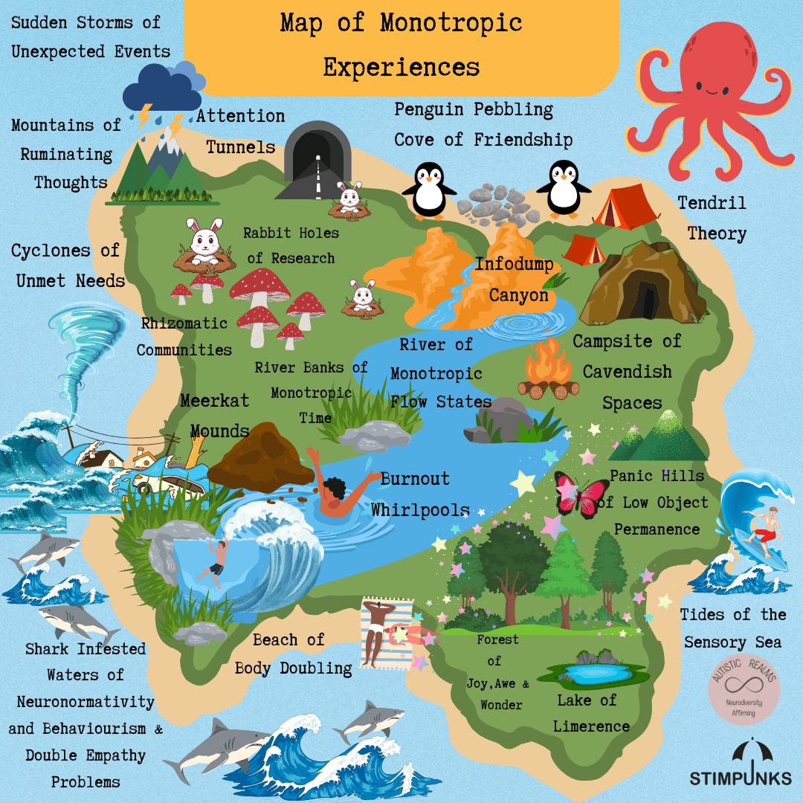

Your map
This is one Autistic person's map. Helen Edgar drew it in 2024 as a reflection of her own monotropic bodymind, and then a lot of people recognised themselves in it.
Yours will be a different shape.
Mark where you are
Go through the twenty areas and say what each one is for you right now — somewhere you are living, somewhere you pass through, somewhere that has taken over the whole map this month, or somewhere you have never been.
There is no score at the end of this. There is no type, no result, and no right map. You get your own legend, and you can print it, keep it, or send it to us.
Nothing you mark leaves your device. There is no account and there is nothing to sign up for.
My Monotropic Map
Say what each of the twenty areas is for you right now. Nothing you mark leaves this device, there is no score at the end, and you can change any of it whenever you like.

- 1. Attention Tunnels
- 2. Penguin Pebbling Cove of Friendship
- 3. Tendril Theory
- 4. Mountains of Ruminating Thoughts
- 5. Cyclones of Unmet Needs
- 6. Rabbit Holes of Research
- 7. Infodump Canyon
- 8. Rhizomatic Communities
- 9. River of Monotropic Flow States
- 10. Campsite of Cavendish Spaces
- 11. Meerkat Mounds
- 12. River Banks of Monotropic Time
- 13. Shark Infested Waters of Neuronormativity and Behaviourism & Double Empathy Problems
- 14. Beach of Body Doubling
- 15. Burnout Whirlpools
- 16. Panic Hills of Low Object Permanence
- 17. Forest of Joy, Awe & Wonder
- 18. Lake of Limerence
- 19. Tides of the Sensory Sea
- 20. Sudden Storms of Unexpected Events
Your legend
Mark an area above and it will appear here.
Living here
Passing through
Taken over the map
Never been
Not said yet
The workbook does the same thing on paper, in more depth, and the questions below work with a blank page.
Questions to sit with
- Where are you on the map?
- Where do you want to be?
- How would you get there, and what support would you need?
- What is your biggest hurdle?
- What new areas would you add?
- Are some areas bigger for you? Does the Burnout Whirlpool need to swallow half the map this year?
- Are you in several places at once — how does that feel, and what helps you navigate?
- What does the Forest of Joy, Awe and Wonder feel like for you? What are your passions?
- What would your childhood map have looked like?
- What do you want your map to look like in five years?
Share your story
We run an open community project across Stimpunks and Autistic Realms, and it has been running since early 2025.
Share poems, art, blogs, essays, videos, podcasts, music — anything that reflects your experience of being monotropic. Use the map for ideas, or ignore it completely; it is offered as optional inspiration, not a template.
Some stories may be chosen for an openly licensed community ebook. If you would rather yours was not included, say so on your submission and that is the end of it.
Make your own map
The invitation has always been to draw your own.
Add areas. Delete ours. Make the mountains bigger. Put the sharks somewhere else, or get rid of them because this year you found a room where there are none.
Your map will change. That is the point of maps.